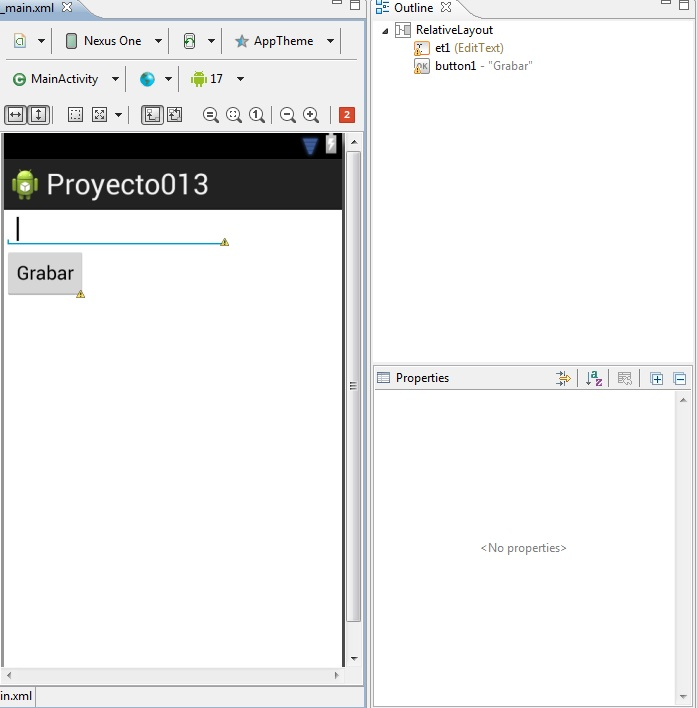

12 - Almacenamiento de datos en un archivo de texto en la memoria interna.Ya se encuentra disponible el nuevo tutorial para aprender android con el nuevo entorno Android Studio propuesto por Google y que remplaza a Eclipse. |
Otra posibilidad de almacenar datos en nuestro dispositivo Android es el empleo de un archivo de texto que se guardará en el almacenamiento interno del equipo (la otro posibilidad es almacenarlo en una tarjeta SD Card)
Confeccionar un programa que permita almacenar notas en un control EditText y cuando se presione un botón almacenar los datos del EditText en un archivo de texto llamado "notas.txt".
Cada vez que se ingrese al programa verificar si existe el archivo de textos "notas.txt" proceder a su lectura y almacenamiento de datos en el EditText.
Crear un proyecto en Eclipse de tipo "Android Project" y definir como nombre: proyecto013 y localizarlo en el paquete com.androidya.proyecto013.
La interfaz visual, los controles y sus ID son los siguientes:
El código fuente de la aplicación:
package com.javaya.proyecto013;
import java.io.BufferedReader;
import java.io.IOException;
import java.io.InputStreamReader;
import java.io.OutputStreamWriter;
import android.app.Activity;
import android.os.Bundle;
import android.view.Menu;
import android.view.View;
import android.widget.EditText;
import android.widget.Toast;
public class MainActivity extends Activity {
private EditText et1;
@Override
protected void onCreate(Bundle savedInstanceState) {
super.onCreate(savedInstanceState);
setContentView(R.layout.activity_main);
et1 = (EditText) findViewById(R.id.et1);
String[] archivos = fileList();
if (existe(archivos, "notas.txt"))
try {
InputStreamReader archivo = new InputStreamReader(
openFileInput("notas.txt"));
BufferedReader br = new BufferedReader(archivo);
String linea = br.readLine();
String todo = "";
while (linea != null) {
todo = todo + linea + "\n";
linea = br.readLine();
}
br.close();
archivo.close();
et1.setText(todo);
} catch (IOException e) {
}
}
@Override
public boolean onCreateOptionsMenu(Menu menu) {
// Inflate the menu; this adds items to the action bar if it is present.
getMenuInflater().inflate(R.menu.activity_main, menu);
return true;
}
private boolean existe(String[] archivos, String archbusca) {
for (int f = 0; f < archivos.length; f++)
if (archbusca.equals(archivos[f]))
return true;
return false;
}
public void grabar(View v) {
try {
OutputStreamWriter archivo = new OutputStreamWriter(openFileOutput(
"notas.txt", Activity.MODE_PRIVATE));
archivo.write(et1.getText().toString());
archivo.flush();
archivo.close();
} catch (IOException e) {
}
Toast t = Toast.makeText(this, "Los datos fueron grabados",
Toast.LENGTH_SHORT);
t.show();
finish();
}
}
Veamos primero como grabamos datos en un archivo de texto. Esto se hace en el método grabar que se ejecuta cuando presionamos el botón "grabar" (recordemos de inicializar la propiedad "OnClick" del botón):
public void grabar(View v) {
try {
OutputStreamWriter archivo = new OutputStreamWriter(openFileOutput("notas.txt",Activity.MODE_PRIVATE));
Creamos un objeto de la clase OutputStreamWriter y al constructor de dicha clase le enviamos el dato que retorna el método openFileOutput propio de la clase Activity que le pasamos como parámetro el nombre del archivo de texto y el modo de apertura.
Seguidamente si el archivo se creó correctamente procedemos a llamar al método write y le pasamos el String a grabar, en este caso extraemos los datos del EditText:
archivo.write(et1.getText().toString());
Luego de grabar con el método write llamamos al método flush para que vuelque todos los datos que pueden haber quedado en el buffer y procedemos al cerrado del archivo:
archivo.flush();
archivo.close();
Todo esto está cerrado en un try/catch para verificar si sucede algún error en la apertura del archivo.
Finalmente mostramos un mensaje temporal en pantalla utilizando la clase Toast:
Toast t=Toast.makeText(this,"Los datos fueron grabados", Toast.LENGTH_SHORT);
t.show();
finish();
Para crear un objeto de la clase Toast llamamos al método makeText de la clase Toast y le pasamos la referencia del Activity actual, el String a mostrar y el tiempo de duración del mensaje. Con el objeto devuelto por el método makeText procedemos a llamar seguidamente al método show para que se muestre el mensaje.
Es común llamar al método show de la clase Toast en una sola línea como esta:
Toast.makeText(this,"Los datos fueron grabados", Toast.LENGTH_SHORT).show();
El método onCreate tiene por objetivo verificar si existe el archivo de texto, proceder a su lectura y mostrar su contenido en el EditText.
Primero obtenemos la lista de todos los archivos creados por la Activity. En nuestro ejemplo puede ser cero o uno:
String []archivos=fileList();
Llamamos a un método que verifica si en el vector de tipo String existe el archivo "notas.txt":
if (existe(archivos,"notas.txt"))
En el caso que me retorne true procedemos a crear un objeto de la clase InputStreamReader y al constructor de dicha clase le pasamos el dato devuelto por el método openFileInput:
InputStreamReader archivo=new InputStreamReader(openFileInput("notas.txt"));
Creamos un objeto de la clase BufferedReader y le pasamos al constructor la referencia del objeto de la clase InputStreamReader:
BufferedReader br=new BufferedReader(archivo);
Leemos la primer línea del archivo de texto:
String linea=br.readLine();
Inicializamos un String vacío:
String todo="";
Mientras el método readLine de la clase BufferedReader devuelva un String:
while (linea!=null)
{
Lo concatenamos al String junto a un salto de línea:
todo=todo+linea+"\n";
Leemos la próxima línea:
linea=br.readLine();
}
Llamamos al método close de la clase BufferedReader y al del InputStreamReader:
br.close();
archivo.close();
Cargamos el EditText con el contenido del String que contiene todos los datos del archivo de texto:
et1.setText(todo);
El método existe llega un vector de tipo String y otro String a buscar. Dentro de un for verificamos el String a buscar con cada uno de los String del vector, si lo encontramos retornamos true. Si recorre todo el for sin encontrarlo fuera del for retornamos false:
private boolean existe(String[] archivos,String archbusca)
{
for(int f=0;f<archivos.length;f++)
if (archbusca.equals(archivos[f]))
return true;
return false;
}
Este proyecto lo puede descargar en un zip desde este enlace: proyecto013.zip